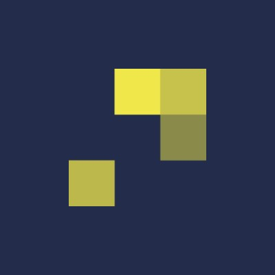

Inetum

Programador Staff
Como Programador Staff en Inetum, trabajé para BBVA en el área de Finanzas y Reporting.
Reporting y soporte: gestioné reportes regulatorios para la Superintendencia Financiera mediante ControllerView (ETL), atendí usuarios e incidencias, y desarrollé workflows y formatos según sus requerimientos. También implementé web scraping para recopilar circulares y noticias del portal de la SFC.
Migración a Datio: participé en la estrategia de gobierno de datos y en la planificación de la migración de ControllerView al entorno Sandbox de Datio. Procesé datos con Python, PySpark, Pandas y NumPy sobre AWS S3 y Athena, contribuyendo a definir el alcance y optimizar costos.
Inteligencia artificial: desarrollé un chatbot con LLMs para apoyar a usuarios, identificar errores y reducir la carga operativa.
Business Intelligence: desarrollé dashboards en Looker Studio para monitorear métricas, avances y envíos regulatorios.
Metodologías ágiles: utilicé Scrum para organizar, delegar y dar seguimiento a las tareas del equipo.